1. Kết nối SQL với Excel phục vụ báo cáo tự động¶
1.1. From SQL server¶
- Mở
Excel >> Data >> From other sources >> From SQL server. Gõ tên địa chỉ Server names, user, password
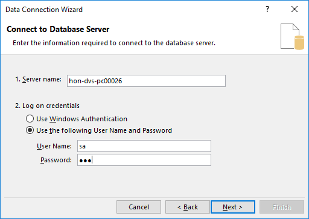
Chọn
Nextliên tục đến khi hiển thị ra thông tin như ảnh dưới đây: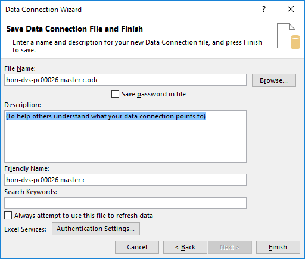
Chọn
Finishđể ra màn hình chọnProperties
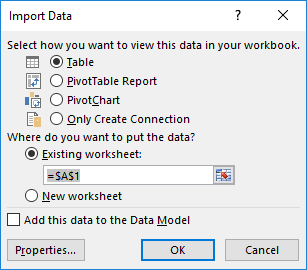
- Chọn
Definition>> phầnCommand typechọn SQL >> gõ câu lệnh SQL truy vấn dữ liệu
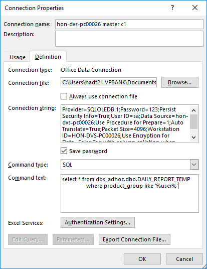
Lưu ý: Có thể chọnSave passwordđể khi gửi file cho client có thể tự refresh file khi dữ liệu trên SQL thay đổi.
1.2. Kết nối SQL với Microft Query¶
From other sources >> From Microsoft Query >> New Data source
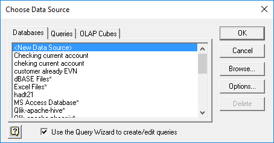
- Chọn tên đặt cho source kết nối, chọn driver là SQL server để đảm bảo client có thể refresh được dữ liệu.
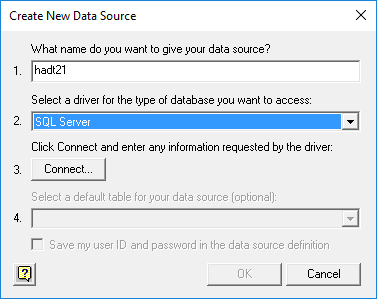
- Chọn
Connect>> gõ tên Server muốn kết nối >> Bỏ chọnUse Trusted Connectionđể chọn User và Password. Chọnsave Passwordcho những lần kết nối sau
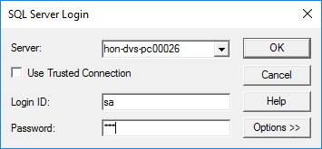
- Chọn
All columntrong phầnQuery Wizard
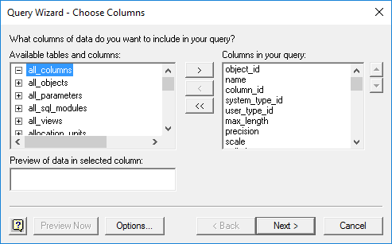
- Chọn
Nextliên tục đến khi hiển thị ra đến phần chọnReturn data to Microsoft >> Finish.
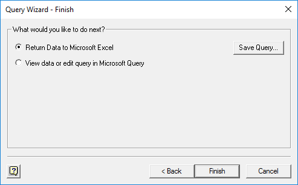
- Phần
Properties >> Commandtext gõ câu lệnh SQL truy vấn, phần parameter cần để =?
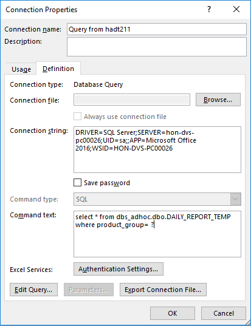
- Điền
parameter value, lựa chọn vị trí ô để gõ dữ liệufilter>> chọn ôUser this valuevàRefresh automatically.
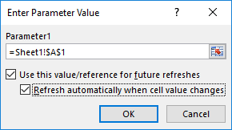
1.3. Chỉnh sửa cậu lệnh truy vấn SQL sau khi đã tạo connection¶
- Chọn:
Data >> Connections >> Properties >> Definitionđể sửa câu lệnh truy vấn ở phầnCommand text.
Lưu ý: Sử dụng kết nối SQL và Excel sẽ cho phép tạo các báo cáo động trong Excel khi làm việc với SQL